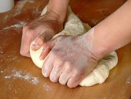

Resep Kue Maryam
Bahan - bahan :
- 250 gr tepung terigu
- 1 butir telur
- 3 sdm margarin, lelehkan
- 100 ml air hangat
- 2 sdm susu bubuk (optional)
- 1/2 solt garam
- margarin leleh untuk olesa
- minyak untuk merendam
Langkah - langkah
- Campur semua bahan roti menjadi satu

- Uleni sampai kalis (aku pake tangan) jangan takut jika adonan lengket ya, lumuri tangan sesekali dengan tepun (tapi jangan menambahkan tepun) uleni terus sampai adonan kali

- Kalisnya adonan canai tidak sekalis adonan roti ya, kira kira seperti ini sudah cukup